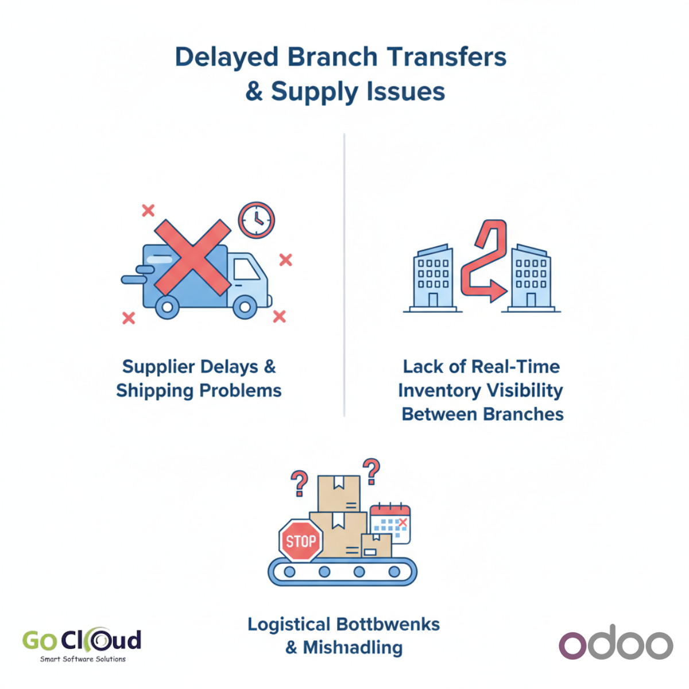
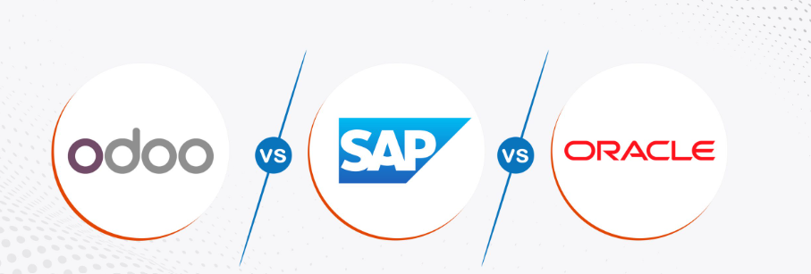
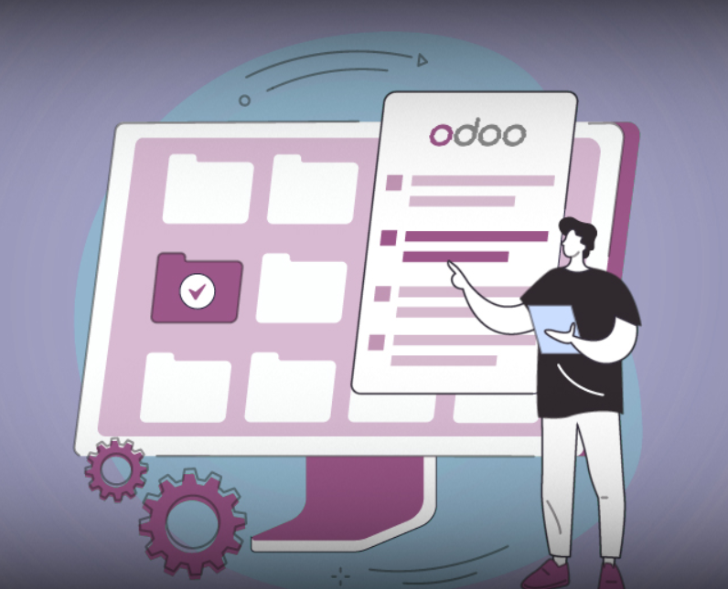
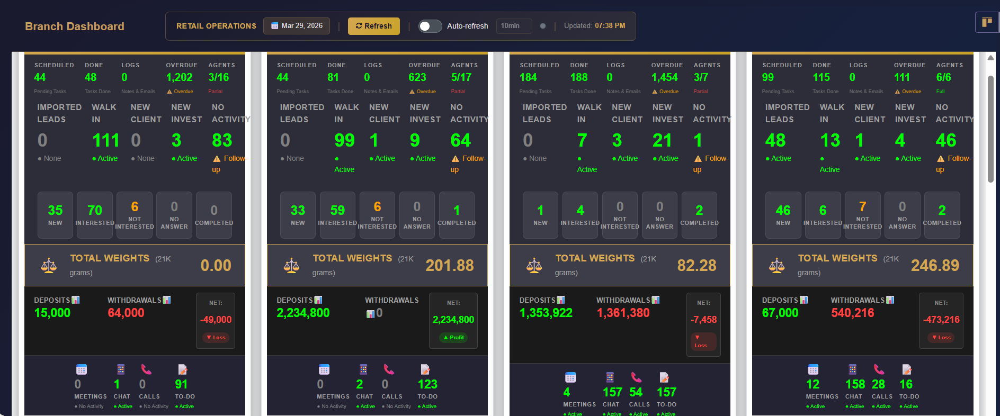

مدونة GoCloud
مقالات متخصصة في التأمين الطبي وتطبيقات Odoo ERP — نصائح عملية وحلول لتحسين أعمالك

تقنيات كأس العالم 2026 في أمريكا وكندا والمكسيك: الذكاء الاصطناعي وكاميرات الحكام وما الذي تتعلمه الشركات منها؟
تحليل عملي لتقنيات كأس العالم 2026 مثل الذكاء الاصطناعي وكاميرات الحكام، وكيف يمكن للشركات الاستفادة من نفس المنهج عبر لوحات تحكم وتقارير ذكية مخصصة على Odoo لتحسين إدارة فرق المبيعات.

أهمية CRM لشركات تجارة واستثمار الذهب في مصر والشرق الأوسط: من متابعة العملاء إلى زيادة الأرباح
دليل عملي يوضح لماذا تحتاج شركات تجارة الذهب والسبائك والاستثمار في مصر والشرق الأوسط إلى CRM احترافي لإدارة العملاء والمستثمرين والفروع والتسعير ومتابعة فرص البيع بدقة أعلى ونمو أسرع.

لماذا تختلف أرقام المبيعات عن المخزون في شركات التجارة والتوزيع؟ وكيف يعالج Odoo السبب الحقيقي
مقال عملي يشرح السبب الحقيقي وراء اختلاف أرقام المبيعات عن المخزون في شركات التجارة والتوزيع، وكيف يساعد Odoo على توحيد الإجراءات ورفع دقة التقارير وتسريع التسليم.

لماذا تتحول الشركات الكبرى إلى Odoo في 2026؟ مقارنة مع SAP وOracle وMicrosoft
مقارنة شاملة بين Odoo وأنظمة ERP العملاقة — SAP وOracle وMicrosoft Dynamics — ولماذا تختار المؤسسات الكبرى الانتقال إلى Odoo في 2026.
هل Odoo 20 مناسب لشركات المقاولات؟ نظرة على المميزات الجديدة والتحديات الحقيقية
مع تحديثات Odoo 20 الجديدة لقطاع الإنشاءات، هل أصبح النظام جاهزاً فعلاً لإدارة مشاريع المقاولات؟ نستعرض المميزات والتحديات الحقيقية.

تكلفة مشروع Odoo: لماذا يختلف السعر من شركة لأخرى؟ دليلك الشامل
تعرّف على المكونات الثلاثة الأساسية لتكلفة مشروع Odoo ERP — من التراخيص إلى التنفيذ والدعم — ولماذا أرخص عرض ليس دائماً الأذكى.

Odoo CRM لشركات المستلزمات الطبية — مراقبة فرق المبيعات وزيادة الإيرادات
كيف يساعد Odoo CRM المخصص شركات المستلزمات الطبية في مراقبة فرق المبيعات الميدانية وتحسين التنبؤ بالمبيعات وتحليل السوق لزيادة الإيرادات.

بوابة تأمين طبي موحدة — لماذا النظام الواحد أفضل من ثلاثة أنظمة منفصلة؟
تعرّف على أهمية وجود بوابة تأمين طبي واحدة تخدم شركة التأمين و TPA ومقدمي الخدمة الطبية، وعيوب استخدام أنظمة منفصلة لكل طرف.

أهمية نظام إدارة الوثائق المتكامل مع نظام التأمين الطبي
كيف يؤثر نظام إدارة وثائق متكامل تماماً مع عمليات التأمين الطبي على كفاءة العمليات وتقليل الأخطاء وتسريع تسوية المطالبات.

كيف يُحدث Odoo CRM ثورة في إدارة شركات تجارة الذهب؟
اكتشف كيف يساعد Odoo CRM شركات تجارة الذهب في ضبط سياسات البيع وتحقيق المستهدفات ومتابعة أداء الفروع لحظياً من خلال لوحة تحكم متكاملة.

كيف يساعد Odoo شركات التوزيع في تحسين سلسلة التوريد
تعرّف على كيفية استخدام نظام Odoo ERP في تحسين عمليات التوزيع وإدارة سلسلة التوريد — من المستودعات حتى التوصيل النهائي.
لماذا تختار Odoo ERP لإدارة أعمالك؟ 7 أسباب مقنعة
اكتشف لماذا يُعد Odoo ERP الخيار الأمثل للشركات المتوسطة والكبيرة التي تبحث عن نظام متكامل لإدارة الموارد بكفاءة وفعالية.
5 تحديات تواجه شركات التأمين الطبي وكيف تحلها التكنولوجيا
اكتشف أبرز التحديات التي تواجه قطاع التأمين الطبي في المنطقة العربية وكيف يمكن للحلول التقنية الحديثة أن تتغلب عليها.
ما هو نظام إدارة التأمين الطبي ELITE؟ دليل شامل
تعرّف على نظام ELITE لإدارة التأمين الطبي — المنصة المتكاملة التي تُبسّط دورة حياة التأمين بالكامل من إصدار الوثائق حتى تسوية المطالبات.